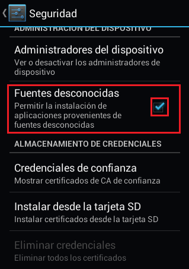
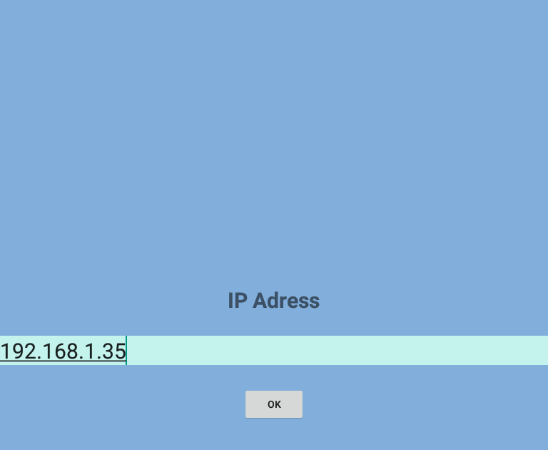

Instalación y configuración¶
Para instalar Undrive en su celular o tablet, primero en los ajustes de su celular o tablet, marque la opcion fuentes desconocidas, para permitir instalar aplicaciones externas en su celular o tablet:

Copie el archivo apk de instalacion, ubicado en la carpeta cliente/APK, en su celular.
Finalmente abra el archivo en su celular e indique instalarlo.
Luego de este ultimo paso, ya debe tener disponible la aplicación en su celular o tablet.
Como ultimo paso debe abrir la aplicación y en la opción de configuración, copiar la ip del servidor:
